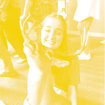

Hi my friends. It is with great honor I roast you.
Hi my friends. It is with great honor I roast you.
Caitlin GarciaCaitlin is a woman of excellence, and she commits to doing things until they are done well. This was seen when she dunked twice and did way better the second time. |
Bella YoungYa know I wouldn’t buy that top, but Bella could rock it. Not because it’s a cute top, but because she has confidence. |
||
Audrey WorthamBreaking News: Audrey made it through one conversation without addressing the song that’s playing in the background |
Ellie HerrmannMost likely to never leave her “I’m misunderstood” phase |
||
Emily MeyersMost likely to attempt conflict resolution via powerpoint presentations. |
 |
Allie GoldreyerPoster child for skorts, when told to “taste and see that the Lord is good” she asks “is it gluten free?” Sorry the GF ones are too easy. |
|
Reiley SmithWhat do you call 3,000 unread messages? Reiley’s phone on her birthday. |
Caroline RinnWathced Miranda Sings growing up and it SHOWS. |
||
Olivia Kate GoodmanAfter recent purchases of antique chairs and hours spent knitting, sources are speculating she has a 74 year old grandmother trapped inside her body. |
LandryLoves Borene more than people from Borene love Borene. |
||
Taylor WhiteMost likely to have and wear a fur tail. Most likely to join the corps as a prank. Flirts with knives (ask her about her last hair cut). |
 |
Sarah PryorThinks not knowing how to cook is a personality trait. Has started to pay rent at the Administration Building. |
|
Madi Turnerthinks pig tails are a personality trait, music taste sponsored by roosters, and has sexualized the war hymn? |
Caroline WilliamsonThe definition of school smart not street smart. |
||
Kennedy HassmannShe's the man-- sorry I mean't she thinks like a man. |
Caroline CristyCristy has started to employ a personal translator so others can interpert her frequent phrases like DMG, rip the gos, and QT. |